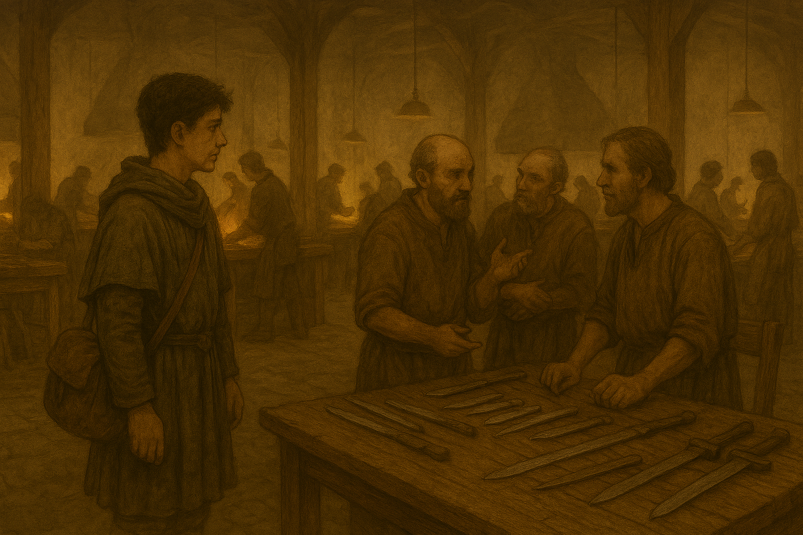

工房
工房内に入ると、作業台には未完成の部品が並び、職人たちは焦った様子で作業していた。
ふと、職人ロルフとベラの会話を耳に入った。
ロルフ：「完成品は検査してるのに、なぜ不良が出るんだ？」
ベラ：「昨日、熱処理のところでなにか変な感じがしたけど、忙しくて確認する余裕なんてなかった…」
ユウヒは、工房の様子をじっくりと観察し始める。
鉄を溶かし、鋳型に流し込む。熱してハンマーで叩いて形を整える。焼き入れ、焼き戻しを行う。
砥石で刃を付ける。完成品を振って、重さのバランスを整える。
熟練の職人と、見よう見まねで作業している人が入り交じっているように見える。素人っぽいのは、隣村の人か？
父の経験と自らの知識を活かし、ユウヒは作業を詳しく観察した。